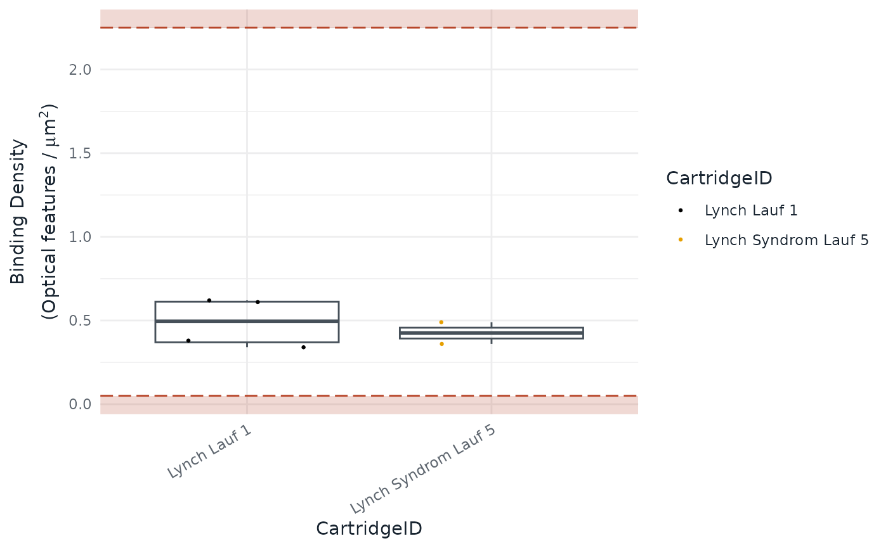
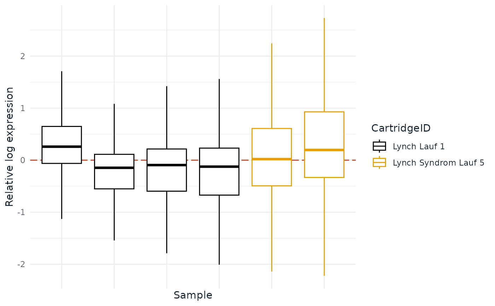
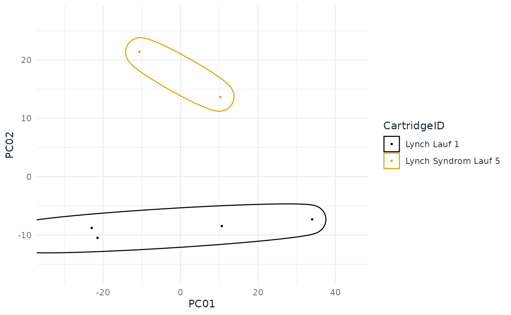
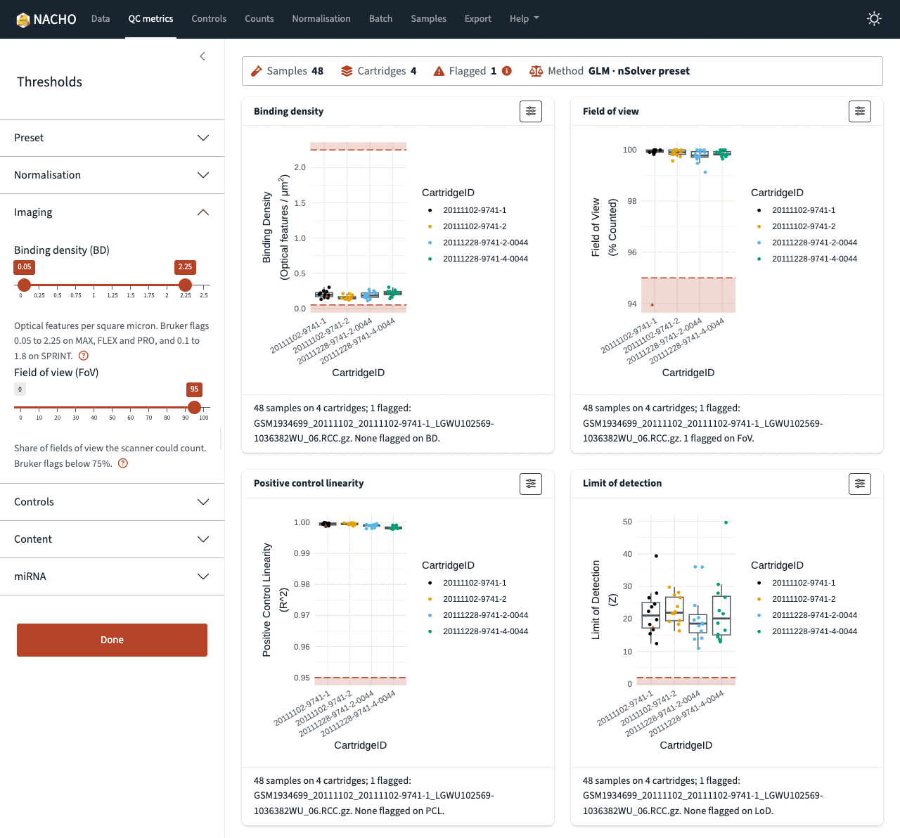

NACHO
A NAnoString quality Control dasHbOard
Mickaël Canouil, Ph.D., Gerard A. Bouland and Roderick C. Slieker, Ph.D.
19 October 2026
Source:vignettes/NACHO.Rmd
NACHO.RmdInstallation
# Install the release from CRAN:
install.packages("NACHO")
# Or install the development version from R-universe:
install.packages(
"NACHO",
repos = c("https://mcanouil.r-universe.dev", "https://cloud.r-project.org")
)
# Or install the latest commit from GitHub with pak:
# install.packages("pak")
pak::pak("mcanouil/NACHO")Overview
NACHO (NAnoString quality Control dasHbOard) works with NanoString nCounter data. An nCounter assay measures messenger RNA and micro RNA (mRNA/miRNA) expression with fluorescent barcodes. Each barcode is assigned to an mRNA or miRNA, and it is counted after it binds its target. Each count of a barcode therefore shows how much of its target is present.
NACHO loads, visualizes and normalizes the exported nCounter data, and it helps you to check its quality. It shows quality control metrics, the expression of control genes, principal components and sample-specific size factors in an interactive web application.
Two functions summarize and visualize the RCC files:
- The
load_rcc()function preprocesses the data. - The
visualise()function starts a Shiny-based dashboard with all relevant QC plots.
NACHO also has a normalise() function. It
calculates the sample-specific size factors again and normalizes the
data.
- The
normalise()function returns anachoobject that holds your settings, the raw counts and the normalized counts.
Since v0.6.0, NACHO has two more functions:
- The
render()function writes a full quality control report with Quarto, as an HTML or PDF file, from the result ofload_rcc()ornormalise(). - The
autoplot()function draws the quality control metrics ofvisualise()andrender().
For more information, see vignette("NACHO") and the
articles on the package website.
Canouil M, Bouland GA, Bonnefond A, Froguel P, ’t Hart LM, Slieker RC (2020). “NACHO: an R package for quality control of NanoString nCounter data.” Bioinformatics, 36(3), 970–971. ISSN 1367-4803. doi:10.1093/bioinformatics/btz647.
@Article{Canouil2020,
title = {{NACHO}: an {R} package for quality control of {NanoString} {nCounter} data},
author = {Mickaël Canouil and Gerard A. Bouland and Amélie Bonnefond and Philippe Froguel and Leen M. {'t Hart} and Roderick C. Slieker},
journal = {Bioinformatics},
year = {2020},
month = {feb},
volume = {36},
number = {3},
pages = {970--971},
issn = {1367-4803},
doi = {10.1093/bioinformatics/btz647},
}Load RCC files
NACHO ships three small datasets in
inst/extdata, so every chunk below runs offline.
GSE178516 holds six mRNA samples measured with the
PanCancer IO 360 panel. GSE270837 holds six miRNA samples.
GSE346526 holds six mRNA samples in RCC files that nSolver
4.0.1.8 wrote. All three come from the NCBI GEO public database (Barrett et al.
2013), and each folder has a samplesheet.csv
whose IDFILE column holds the exact name of each RCC
file.
load_rcc() takes the folder with the RCC files, the
samplesheet and the name of the identifier column. It reads the files,
computes the quality-control metrics, normalises the counts and returns
a nacho object. With only six samples, there are at most
five principal components, so we ask for five. The RCC files do not name
the instrument, so we say it is an nCounter MAX, which sets the binding
density limits.
data_directory <- system.file("extdata", "GSE178516", package = "NACHO")
nacho <- load_rcc(
data_directory = data_directory,
ssheet_csv = file.path(data_directory, "samplesheet.csv"),
id_colname = "IDFILE",
instrument = "max",
n_comp = 5
)
## ℹ Reading 6 RCC files
## ✔ Reading 6 RCC files [41ms]
##
## ℹ Assembling 6 samples
## ✔ Assembling 6 samples [33ms]
##
## ℹ Computing quality-control metrics and normalising
## ✔ Computing quality-control metrics and normalising [39ms]
##
print(nacho)
## <nacho> 6 samples, 784 probes, from single-sample RCC files
## Normalisation: GEO, with 20 housekeeping genes
## Flagged samples: 0 of 6
## Created with NACHO 2.0.8.9000Read the object
Four accessors give you the content of a nacho object as
plain matrices and data frames. nacho_counts() returns the
counts, with one row per probe and one column per sample. Pass
normalised = TRUE for the normalised counts, and
log2 = TRUE for log2(count + 1).
head(nacho_counts(nacho), n = c(5, 3))
## GSM5393247_S02.RCC.gz GSM5393248_S13.RCC.gz GSM5393250_S15.RCC.gz
## A2M 255 549 5061
## ACVR1C 11 52 184
## ADAM12 1 8 14
## ADGRE1 2 0 26
## ADM 62 181 117nacho_samples() has one row per sample, with the
samplesheet columns, the RCC header fields and the quality-control
metrics.
head(nacho_samples(nacho)[, c("IDFILE", "title", "CartridgeID", "BD", "FoV")], n = 3)
## IDFILE title CartridgeID BD FoV
## 1 GSM5393247_S02.RCC.gz Patient S02 Lynch Lauf 1 0.34 99.8
## 2 GSM5393248_S13.RCC.gz Patient S13 Lynch Lauf 1 0.38 100.0
## 3 GSM5393250_S15.RCC.gz Patient S15 Lynch Lauf 1 0.62 99.8nacho_probes() has one row per probe, with its code
class, its detection rate and whether it is a housekeeping gene.
head(nacho_probes(nacho), n = 3)
## CodeClass Name Accession detection_rate is_housekeeping is_excluded
## 1 Endogenous A2M NM_000014.4 1.0 FALSE FALSE
## 2 Endogenous ACVR1C NM_145259.2 1.0 FALSE FALSE
## 3 Endogenous ADAM12 NM_003474.5 0.5 FALSE FALSE
table(nacho_probes(nacho)[["CodeClass"]])
##
## Endogenous Housekeeping Negative Positive
## 750 20 8 6nacho_qc() has the quality-control table, one row per
sample.
head(nacho_qc(nacho)[, c("IDFILE", "BD", "FoV", "PCL", "LoD")], n = 3)
## IDFILE BD FoV PCL LoD
## 1 GSM5393247_S02.RCC.gz 0.34 99.8 0.98757 11.42
## 2 GSM5393248_S13.RCC.gz 0.38 100.0 0.98809 21.76
## 3 GSM5393250_S15.RCC.gz 0.62 99.8 0.98463 11.12Earlier versions of NACHO kept all of this in a
$nacho data frame. That slot is gone, and the article
“Moving from NACHO 2” on the package website maps each old
element to its accessor.
Quality control
A sample is flagged when a metric falls outside its limits.
nacho_thresholds() builds those limits. The default
"nsolver" preset follows the nCounter knowledge base, and
preset = "legacy" reproduces the limits of NACHO
2.
str(nacho_thresholds(), max.level = 1)
## List of 13
## $ preset : chr "nsolver"
## $ instrument : chr "max"
## $ BD : num [1:2] 0.05 2.25
## $ FoV : num 75
## $ PCL : num 0.95
## $ LoD : num 2
## $ Positive_factor : num [1:2] 0.3 3
## $ House_factor : num [1:2] 0.1 10
## $ Housekeeping_detected: num 3
## $ Ligation_order : num 1
## $ Ligation_R2 : num 0.95
## $ Ligation_NEG : num [1:2] -Inf 0
## $ Haemolysis : num [1:2] -Inf InfEach *_status column of nacho_qc() holds
the result of one check. Three more columns summarise them:
status, n_flags and reason.
nacho_qc(nacho)[, c("IDFILE", "status", "n_flags", "reason")]
## IDFILE status n_flags reason
## 1 GSM5393247_S02.RCC.gz pass 0 <NA>
## 2 GSM5393248_S13.RCC.gz pass 0 <NA>
## 3 GSM5393250_S15.RCC.gz pass 0 <NA>
## 4 GSM5393251_S16.RCC.gz pass 0 <NA>
## 5 GSM5393267_S46.RCC.gz pass 0 <NA>
## 6 GSM5393268_S47.RCC.gz pass 0 <NA>All six samples pass. To use the legacy limits, give
load_rcc() the preset, or pass new limits to
normalise().
legacy <- load_rcc(
data_directory = data_directory,
ssheet_csv = file.path(data_directory, "samplesheet.csv"),
id_colname = "IDFILE",
instrument = "max",
n_comp = 5,
preset = "legacy"
)
## ℹ Reading 6 RCC files
## ✔ Reading 6 RCC files [20ms]
##
## ℹ Assembling 6 samples
## ✔ Assembling 6 samples [20ms]
##
## ℹ Computing quality-control metrics and normalising
## ✔ Computing quality-control metrics and normalising [27ms]
##
table(nacho_qc(legacy)[["status"]])
##
## pass
## 6write_thresholds() saves a set of limits to a YAML file,
and read_thresholds() reads the file back. With this file,
you can use the same limits for each study. The Export
page of the app writes the same file.
thresholds_file <- tempfile(fileext = ".yml")
write_thresholds(nacho_thresholds(preset = "legacy"), thresholds_file)
legacy <- normalise(nacho, outliers_thresholds = read_thresholds(thresholds_file))
## Normalising again with new settings:
## • thresholds preset
table(nacho_qc(legacy)[["status"]])
##
## pass
## 6Normalise
normalise() normalises a nacho object again
with new settings and returns a new object. The default scales the
samples with the geometric mean of the positive controls
("GEO"). "GLM" fits a Poisson model to the
positive and negative controls instead.
geo_norm <- normalise(nacho, normalisation_method = "GEO")
## The settings are the same as in the input, so `normalise()` returns it
## unchanged.
glm_norm <- normalise(nacho, normalisation_method = "GLM")
## Normalising again with new settings:
## • normalisation_method
head(nacho_counts(glm_norm, normalised = TRUE), n = c(3, 3))
## GSM5393247_S02.RCC.gz GSM5393248_S13.RCC.gz GSM5393250_S15.RCC.gz
## A2M 1511.749015 935.45044 2951.662509
## ACVR1C 65.212703 88.60368 107.311974
## ADAM12 5.928428 13.63134 8.165042Background handling has two arguments. background
chooses how to estimate each sample’s background from its negative
controls, for example "mean_2sd".
background_mode chooses what to do with it:
"threshold" raises lower counts to the background, and
"subtract" removes it.
background <- normalise(
nacho,
background = "mean_2sd",
background_mode = "subtract"
)
## Normalising again with new settings:
## • background
## • background_modeexclude_outliers() drops the flagged samples and
normalises the remaining ones again. Here nothing is flagged, so the
object stays as it is.
cleaned <- exclude_outliers(geo_norm)
## No sample is flagged, so nothing is removed.miRNA panels
load_rcc() recognises miRNA panels from their probes.
The folder GSE270837 holds six samples from such a panel,
measured on an nCounter SPRINT, so we load them with the SPRINT
limits.
mirna_directory <- system.file("extdata", "GSE270837", package = "NACHO")
mirna <- load_rcc(
data_directory = mirna_directory,
ssheet_csv = file.path(mirna_directory, "samplesheet.csv"),
id_colname = "IDFILE",
instrument = "sprint",
n_comp = 5
)
## ℹ Reading 6 RCC files
## ✔ Reading 6 RCC files [24ms]
##
## ℹ Assembling 6 samples
## ✔ Assembling 6 samples [21ms]
##
## ℹ Computing quality-control metrics and normalising
## ✔ Computing quality-control metrics and normalising [22ms]
##
print(mirna)
## <nacho> 6 samples, 828 probes, from single-sample RCC files
## Normalisation: GEO, without housekeeping genes
## Flagged samples: 0 of 6
## Created with NACHO 2.0.8.9000
table(nacho_probes(mirna)[["CodeClass"]])
##
## Endogenous1 Housekeeping Ligation Negative Positive SpikeIn
## 798 5 6 8 6 5The housekeeping mRNAs of a miRNA panel sit at the background level,
so housekeeping normalisation is off by default. It only switches on
when you pass housekeeping_genes or set
housekeeping_predict = TRUE. The miRNA methods of
normalisation_method ("stable_mirna",
"total_mirna", "spike_in" and
"ligation") scale the samples with miRNAs or with the
spike-in and ligation controls instead.
Ligation_NEG flags a sample when its largest ligation
negative control is above the detection limit. Whole-blood RNA raises
the ligation negative LIG_NEG_A together with red blood
cell miRNAs such as miR-451a. Thus most samples of a whole-blood study
can fail Ligation_NEG without a fault in the assay. When
more than half of the samples fail, load_rcc() warns about
this pattern. For whole-blood samples, set a higher upper bound for
Ligation_NEG and normalise again. The bound below is an
example; choose it from the Ligation_NEG values of your
study.
thresholds <- nacho_thresholds(instrument = "sprint")
thresholds[["Ligation_NEG"]] <- c(-Inf, 100)
mirna <- normalise(mirna, outliers_thresholds = thresholds)Plots
autoplot() draws any quality-control figure of the app
and of the report. It takes the object and a type, and
returns a ggplot object.
autoplot(nacho, type = "BD")
Every type takes the same arguments:
colour, size, show_legend,
show_outliers, outliers_factor,
outliers_labels and dark. A few plot types
ignore some of them, and ?autoplot.nacho says which. The
relative log expression of the normalised counts shows whether the
samples line up.
autoplot(geo_norm, type = "RLE")
The first two principal components show how the samples spread.
autoplot(geo_norm, type = "PCA12")
This table lists every plot type.
type |
What it shows |
|---|---|
"BD" |
Binding Density. |
"FoV" |
Field of View (imaging). |
"PCL" |
Positive Control Linearity. |
"LoD" |
Limit of Detection. |
"Positive" |
Positive controls. |
"Negative" |
Negative controls. |
"Housekeeping" |
Housekeeping genes. |
"PN" |
Positive controls against negative controls. |
"ACBD" |
Average counts against binding density. |
"ACMC" |
Average counts against median counts. |
"PCA12" |
Principal component 1 against 2. |
"PCAi" |
Scree plot of the principal components. |
"PCA" |
Planes of the first principal components. |
"PFNF" |
Positive factor against negative factor. |
"HF" |
Housekeeping factor. |
"NORM" |
Normalisation factor. |
"Stability" |
geNorm stability of the housekeeping genes. |
"RLE" |
Relative log expression of the normalised endogenous genes. |
"BatchFactors" |
Normalisation factors by cartridge. |
"PCBatch" |
Share of each principal component explained by cartridge and date. |
Report
render() builds a report with every quality-control
metric and a description of each. It writes a self-contained HTML file,
or a Typst PDF with format = "typst", and returns the path.
It needs Quarto 1.9.18 or newer. The article “The Quality-Control
Report” on the package
website shows what the report looks like.
App
visualise() opens the interactive app. The sidebar holds
the quality-control thresholds and the normalisation settings for every
page. When you click Done, visualise() returns the tuned
object to your R session.
tuned <- visualise(nacho)
The article “Explore quality control in the app” on the package website walks through every page of the app.
Bioconductor
as_summarized_experiment() converts a nacho
object into a SummarizedExperiment, and
as_nacho() converts it back. This needs the
SummarizedExperiment package from Bioconductor.
se <- as_summarized_experiment(nacho)
se
## class: SummarizedExperiment
## dim: 784 6
## metadata(1): nacho
## assays(2): counts normalised
## rownames(784): A2M ACVR1C ... POS_E(0.5) POS_F(0.125)
## rowData names(6): CodeClass Name ... is_housekeeping is_excluded
## colnames(6): GSM5393247_S02.RCC.gz GSM5393248_S13.RCC.gz ...
## GSM5393267_S46.RCC.gz GSM5393268_S47.RCC.gz
## colData names(42): IDFILE geo_accession ... PC04 PC05